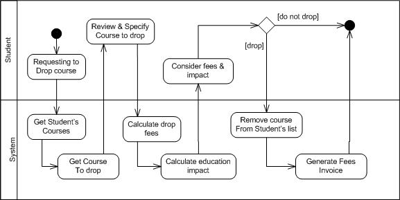
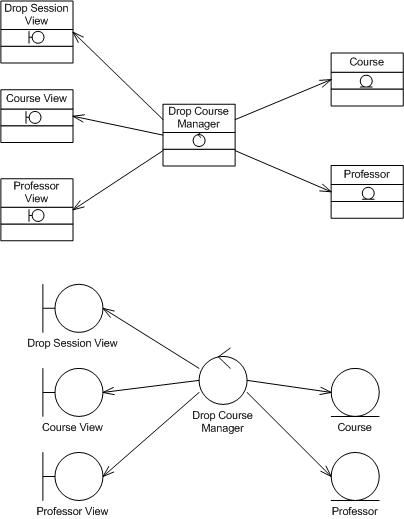
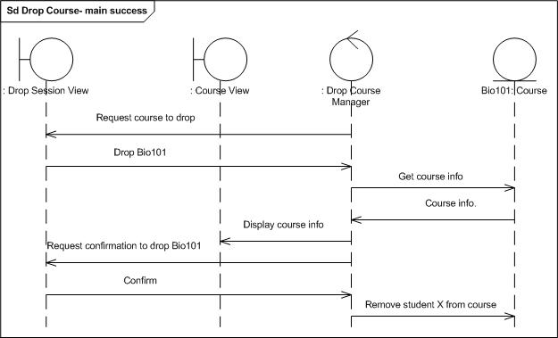
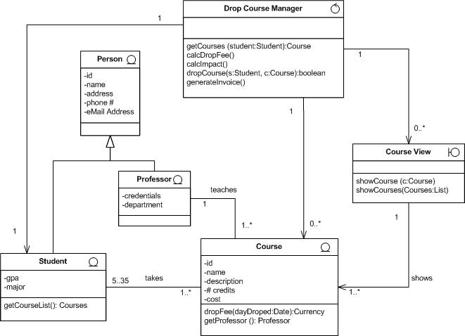

OUM |
Task Overview |
||
Method Navigation |
Current Page Navigation |
||
|
|
||||||||
The purpose of this task is to determine the system behavior that is required to satisfy the functional requirements that have been documented in the use cases.
This task may be done in parallel with Analyze Data (AN.050) and Analyze User Interface (AN.090) and is performed for every use case package documented in the Package Diagram in the Architecture Description (RD.130)
To accomplish this task, you review the Use Case Specification (RA.024) for each Use Case in the Package. Each step of each scenario is analyzed to determine what the system must do to perform that behavior. Once those operations are identified, they are allocated to specific processes, modules, or classes within the use case package.
In a commercial off-the-shelf (COTS) application implementation, this task is generally performed only when there is a need to gain further clarification of the data required to support a Use Case Package. This typically applies to requirements that are to be satisfied through custom-built components, which extend the functionality of the COTS system and/or integrate the COTS system with other information systems.
As an example, a step in a use case scenario states that:
Then during this task you might define the system operations to be:
You would then allocate those operations to specific portions of the system for execution. This give specific details that will later be used to validate the logic that needs to be implemented in the design.
The standard and recommended approach and notation for completing this task is to use a UML class diagram and possibly a UML Sequence Diagram (Task Steps 1-7). This task may also be accomplished using a Non-UML approach that uses other notational or textual techniques including entity-relationship diagrams (ERD’s), functional decomposition charts, or process mapping diagrams (Task Steps 1 – 3A).
If a UML class diagram is used for this task, the goal is to find and assign controller classes and boundary classes and add them to the entity classes found in the Domain Model (RD.065) thus creating an Analysis Class Diagram. Operations derived from each use case are added to each class being developed. Also attributes and associations will be updated or created and added to the Analysis Class Diagram. Depending on the non-functional requirements and your architecture you may need to consider event dependencies, persistence, and object communication aspects that are independent of any specific design. Finally, the results of the updated analysis class diagram will be reviewed for functional completeness.
B.ACT.AE Analyze - Elaboration
C.ACT.AC Analyze - Construction
Behavior Analysis
The resulting work product of the Behavior Analysis is an Analysis Class Diagram. This Analysis Class Diagram is also updated by the Data Analysis (AN.050). The Behavior Analysis adds the operations, additional attributes, associations, roles, responsibilities, specializations and generalizations required to support the Use Case Package.
To accomplish this you may update the Domain Model (RD.065) to capture the results of analyzing the data requirements of the Use Case Package. If no Domain Model is available, develop a UML class diagram to support each Use Case Package.
You might also produce some intermediate diagrams (such as sequence, activity, or state diagrams) that help develop the analysis class diagram and can also provide insight into missing business rules and/or behavior.
If desired, the Data Analysis (AN.050), Behavior Analysis (AN.060), and Interface Analysis (AN.090) may be organized into an Analysis Specification (AN.100) for each Use Case Package identified in the Package Diagram contained in the Architecture Description (RD.130).
If your project is using a UML approach you should follow steps 1 through 7, skipping step 3A. If your project is using a non-UML approach, you should follow steps 1, 2, and 3A only.
No. |
Task Step | Component | Component Description |
|---|---|---|---|
1 |
Review functional requirements: Use Case Model (RA.023), Use Case Specification (RA.024), Domain Model (RD.065), Supplemental Requirements (RD.055), and Candidate Business Rules (RA.027). | None | The Use Case Model forms the basis for visualizing the basic functionality of your system from the actor's perspective. The Use Case Specification provides the detailed description of the actor's interaction with the system. This diagram and the specification is developed during Requirement Analysis and refined during Analysis. The Domain Model is a class diagram showing the entities, their characteristics, and relationships that are relevant to the problem being solved. The terminology in this diagram is made up of the language of the user. Some requirements may come in the form of a Supplemental Requirements documenting detailed non-functional requirements in text. The Candidate Business Rules also provides information that will be turned into behavior in the system. After all some object or process must be responsible for seeing to it that each rule is followed. |
2 |
Systematize Use Case Descriptions.
|
Use Case Specification (RA.024) Activity Diagram |
If necessary the Use Case Specification gets updated with information about what the system must do (not how to do it) in order to accomplish the scenarios within the use case. For complex use cases, it may be necessary to diagram the use case. If the scenario flow is very sequential then use a Sequence Diagram. If the use case has a number of alternatives and error flows consider use an Activity Diagram or Flow Chart. If the use case scenarios are very complex with many intertwined paths consider using a State Diagram. |
3 |
Find Analysis Classes or entities. (UML Approach) |
Sequence Diagram | The Sequence Diagram contains a depiction of the relationship between boundary, control, and entity classes, one for each major use case scenario. The Analysis Model is an accumulation of all the classes showing attributes, operations, and associations that will support the functionality described in the use cases. |
3A |
Define systems operations. (Non-UML Approach) |
For non-UML Approach, you may se an ERD, Functional Decomposition Chart, Process Mapping Diagram | Define the system’s operations and assign them to a specific process or module within the package. (Skip remaining tasks steps if you are using the non-UML Approach.) |
4 |
Allocate behavior. | None | Review the Use Case Specifications to decide which classes should own the behavior described in those specifications. |
5 |
Update Analysis Classes. | Analysis Class Diagram | The Analysis Class Diagram is updated showing all the operations assigned to each class. |
6 |
Find analysis mechanisms. | Use Case Realization Diagram, Analysis Class diagram, Package Diagram | Annotate the classes in the Analysis Class Diagram with information that is design independent related to persistence of objects, error handling, event notification, and special message handling. Organize these classes into a Package Diagram as groupings by use case and by domain. |
7 |
Review for functional coverage. | Analysis Class Diagram | Perform a quality check on your Analysis Class Diagram to ensure that in aggregate the classes have the operation behavior necessary to accomplish the functional requirements as specified in the use cases. |
During this first step you are gathering and reviewing all the material that has been generated to date that contains functional / behavioral requirements. The objective of this task is to get a high level sense of what needs further analysis. During this task you should consider the following questions:
Use cases are a great way of soliciting functional requirements from users. First and foremost they should reflect the interaction between the Actors and the system. During analysis you need to augment the use case specification with information that describes what (not how) the system does to accomplish the actor's goals. This often involves describing what the system is doing and when it is doing it to conform to some business rule.
For example, the use case may simply say, “System uses the name and SSN to search for any previously entered profile information.” This does not say what the system needs to do in order to provide that information. More detail is needed here that describes what the system must do. The use case may be augmented to provide clarity. For example:
“When the system receives the SSN from the actor, the system first checks to see if it is a valid SSN associated with this student. The system requests student admission information from the Admissions system using the SSN. If the SSN is not found in the Admissions system then the system tells the student of the error and requests a corrected SSN from the student. If the SSN is valid, the system then checks that the name of the student that is logged in is the same as the name of the student listed in the admission information. If the names do not match, this use case terminates in failure with an error message to the student and a notification is sent to the registrar’s office. If the names match this use case proceeds to the next step.”
The goal of improving the use case is to make clear exactly what the system needs to do and what data is needed at each step to fulfill the goals of the actor.
It is not recommended that you specify exacting details for every line of every scenario of every use case. Focus on areas of ambiguity found during step one's review. Focus on areas in your use cases that are critical to the success of the project.
As has been often said, a picture is worth a thousand words. So a diagram can say a lot in a small amount of space. At this point you should consider augmenting your use cases with sequence, activity or state diagrams.
Sequence Diagram: In those cases where the main success scenario has many steps with a few short alternatives consider using a sequence diagram. The sequence diagram is good for representing a simple flow of sequenced interactions. When you represent a scenario as a UML sequence diagram, create a lifeline for each actor and a lifeline to represent the system. The steps in the scenario become the messages in the sequence.
Activity Diagram: If you have a use case that is highly interactive it may be better to diagram it as a flow of behaviors in an activity diagram. Activity diagrams lend themselves to exploring use cases that do not really have a “main success scenario as much as they have many equal alternative successful scenarios. The following diagram shows the “Allocate Assets” use case in a portfolio management system:
Another kind of activity diagram for use cases involves using swim lanes. The actors each have their own swim lane and the system gets its own swim lane. Then the behavioral steps of the actors and the system are laid out as an activity diagram.

State Diagram: On some occasions it seems that every step in a use case potentially leads to every other step in the use case. These are highly dynamic use cases with just a few steps but these few steps can be combined in many ways to form lots of alternatives. These use case often have many steps that loop back to earlier steps. For this situation, use a state diagram.
Each interactive step of the use case becomes an event on the state diagram. The behavior that the system must perform is described as entry, do, and exit actions within the states.
Follow step 3 if you are using a UML approach on your project. Skip to 3A, is you are using a non-UML approach
During this step you will find those classes that will be necessary to accomplish or “realize” a given use case. This step is performed for each use case. Taken together all the classes you find during this step will form the analysis model.
To find analysis classes, do the following for each use case:
The following Analysis Model shows the classes found for a simple drop course scenario. The Course and Professor are entity classes from the Domain Model. The Drop Course Manager is the controller class. The user interface or boundary classes are the Drop Session View, the Course View, and the Professor View.

The following sequence diagram shows simplified behavior from an analysis perspective for the main success scenario of the drop course use case. Do not try to perform design at this stage.

Assign each of the tasks documented or diagrammed in Step to to a specific process, module, or class within the package. This can be done using a variety of notations including an entity-relationship diagram (ERD), functional decomposition, or even a simple process mapping diagram.
If you are using an alternate, non-UML approach you can skip the remaining steps in this tasks.
At this stage, you consider which class should perform the behavior you outlined in step 2 & 3 when you systematized the use cases and found analysis classes. Those diagrams you put together in that step will help as well. Review the sequence diagrams you put together when finding analysis classes. Any class on these diagrams that is receiving a message should have the responsibility to receive that message. You can show this on the analysis class diagram as an operation on the class receiving the message. Any class sending a message should have an operation definition in which the class has the responsibility for sending that message to an instance of the other class.
Entity classes will contain behavior related to their attributes, such as business validation rules.
Control classes are assigned behavior that represents the major events of the use case scenario. They should embody the flow of control of the use case. For example, when the user indicates to the system that they want to remove a strategic allocation in a financial portfolio, the control class would have an operation such as:
+ removeAllocation ( type : allocationType, asset : AssetAllocation)
Boundary classes should be assigned behavior that gets information from entity classes for display or to pass to another external system. They may also have behavior for requesting information from a human actor or another system.
For entity classes, you should be able to determine many of the required attributes based on the attributes identified in the domain model. The entity classes are used to model information that will be persistent.
The boundary or interface classes are used to model interaction between the application and its actors. Those classes that should interact with human actors need attributes representing the items that the user either need to manipulate or see for information purpose. The boundary classes that are used by system actors will need attributes required by the communication devices the actor uses.
A controller class as the name implies, is responsible for controlling class interactions inside a use case. There will only be a few attributes required for controller classes. Many controller classes will not have any attributes, while others do need some attributes of a temporal nature, such as derived, summarized or accumulated values.
The following is a partial Analysis Model. Notice the icons in the upper right hand corner of the class, they indicate the stereotype of the class — controller, entity, or boundary.

Identify additional associations
View the diagram to identify required associations between classes. The links that are shown on these diagrams may result in associations. Be aware that you should only model those associations that are required for the use case realizations. You may also identify possible aggregations among objects. You should also define the multiplicity of these additional associations.
Identify possible generalizations
Use the class diagrams to identify commonalities between various analysis classes. A generalization is often referred to as an "is a kind of" relationship. For example, an analysis class "Vehicle" may be a generalization for a "Car" and a "Truck." A car "is a kind of" Vehicle, and a truck "is a kind of" Vehicle.
Identify special requirements
Determine for each class any special requirements that may apply. Use the special requirements identified in the Analyzed Use Cases as the input. This would typically be non-functional requirements, such as volumes, and usage frequencies.
There are a variety of mechanisms that an application will use at runtime. These include persistence, inter-process communication, error handling, event notification, and messaging between objects. On any given project these mechanisms may already be decided upon when the architecture is chosen. However for many projects analysis of persistence details are necessary.
Persistence relates preserving the life of an object’s information beyond any given application runtime. Characteristics such as object size, number of instances, and access frequency may be determined during behavior analysis. As an example consider the Student class. The attributes of each Student object will take up anywhere between 5 and 20 Kbytes of space. Since there are 2,000 students in the university so there should be about 3,000 Student objects at any one time. During the registration period, about 100 students will be created or deleted each day; there will be up to 500 updates to student records per hour; and there will be up to 1,000 reads of student per hour.
Be careful to specify mechanisms that are independent of the any specific design solution. The persistence information above is independent of whether we use a relational database or flat file solution. It is independent of how we access the data using SQL or java persistence approach like Hibernate.
During this last step you will review the analysis model to see if it has all the required functionality. The basic idea is to simply go back to the use case specifications and the non-functional requirements to see if you can “walk through” the classes and accomplish the behavior of the use cases.
A walk through is best performed as a team. Someone reads the use case while another person or persons looks at the class diagrams. Is there a class that has behavior assigned to it that can perform a step in a use case scenario? Do several classes come together to accomplish the required behavior?
This task has supplemental guidance that should be considered if you are doing a custom Business Intelligence (BI) implementation. Use the following to access the task-specific custom BI supplemental guidance. To access all BI supplemental information, use the OUM BI Supplemental Guide.
This task has supplemental guidance that should be considered if you are executing a service based on the BPM Project Engineering view. Use the following to access the task-specific supplemental guidance. To access all BPM Project Engineering supplemental information, use the BPM Project Engineering Supplemental Guide.
This task involves the following method roles:
Role |
Responsibility |
% |
|---|---|---|
Designer |
The designer defines and maintains the responsibilities, attributes, relationships and special requirements of the classes making sure that each class fulfills its requirements. This person is also responsible for the analysis of packages within which the classes are maintained. There may be several designers depending on the size of the project, each of which may be responsible for certain classes and packages assigned to them. | 60 |
Developer |
Review the Behavior Analysis in order to assure that they are compatible with the architecture. This person is also responsible for analyzing the more complex packages and classes. | 20 |
System Architect |
Participate in definition and review of the Behavior Analysis to gain an understanding of the application and its architecture. | 20 |
* Participation level not estimated.
You need the following for this task:
Prerequisite |
Usage |
|---|---|
Architecture Description |
The Conceptual View (AN.040) of the Architecture Description defines the use case packages to be analyzed. |
Domain Model (RD.065) or Analysis Class Diagram or Data Model |
The Domain Model contains the significant business objects, represented as a UML class diagram, which provide an important input to analyze classes. |
Use Case Model (RA.023.1) |
The Use Case Model provides a graphical view of the use cases and the actors that trigger/support them. |
Use Case Specification (RA.024.1) |
The Use Case Specification provides all the use cases along with each their corresponding details and that is what is analyzed in this task. |
Prerequisite |
Usage |
|---|---|
Architecture Description |
Updates to the Architecture Description (including updates made by RA.035 and AN.040) may impact the use case package being analyzed and must be taken into account. |
Use Case Specification (RA.024.2) |
The Use Case Specification provides all the use cases along with each their corresponding details and that is what is analyzed in this task. |
Data Design (DS.090.1) |
Development of the interaction diagram as part of the Data Design may impact the use case analysis, and vice versa. Therefore these tasks are often done in parallel. |
Reviewed Use Case Model (RA.180.2) |
The following templates and tools are available to assist with this task:
Template File Name |
Comments |
|---|---|
ANALYSIS_MODEL.DOC |
MS WORD - Update the Analysis Model created in AN.050 with the Behavior Analysis details. |
Tool |
Comments |
|---|---|
| JDeveloper |
Example |
Comments |
|---|---|
The output from the Analyze Behavior task is used in the following ways:
Distribute the output from this task as follows:
Use the following criteria to check the quality of this work product:

Copyright © 2006, 2016, Oracle and/or its affiliates. All rights reserved.